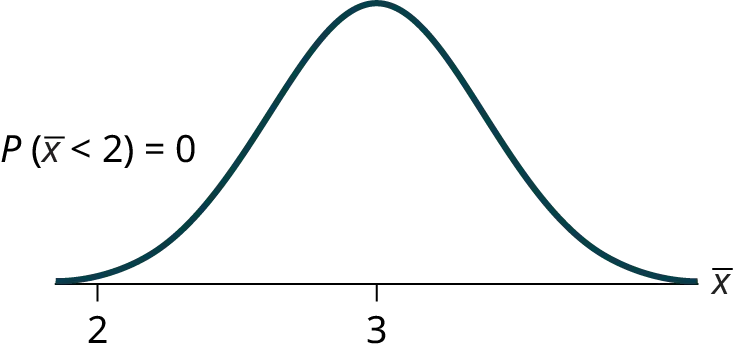
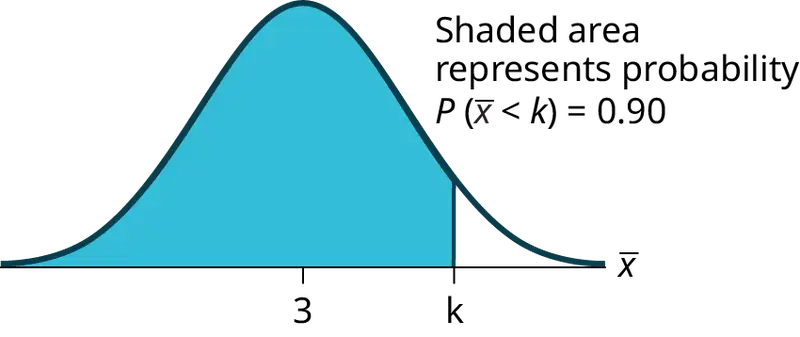
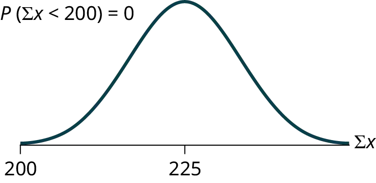
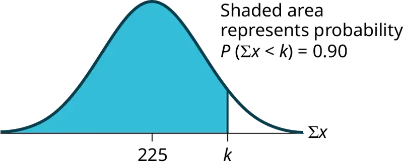
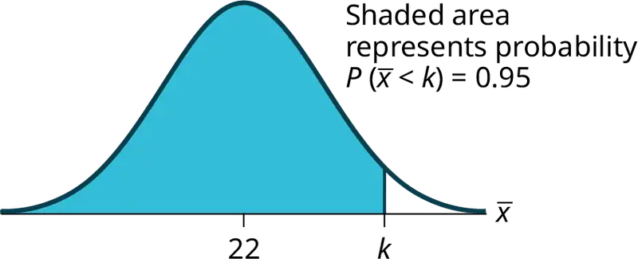
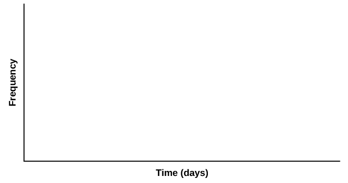
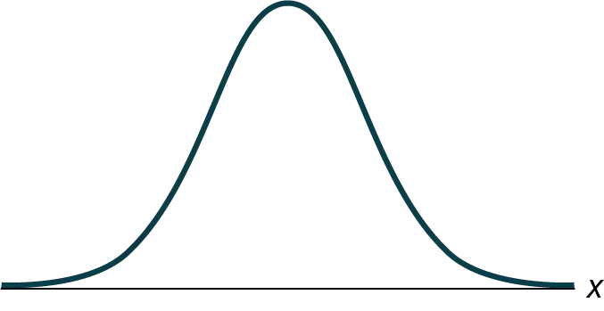

Chapter 7: The Central Limit Theorem¶
Introduction¶
Chapter Outline: Chapter Objectives
By the end of this chapter, the student should be able to:
- Recognize central limit theorem problems.
- Classify continuous word problems by their distributions.
- Apply and interpret the central limit theorem for means.
- Apply and interpret the central limit theorem for sums.
Why are we so concerned with means? Two reasons are: they give us a middle ground for comparison, and they are easy to calculate. In this chapter, you will study means and the central limit theorem.
The central limit theorem (clt for short) is one of the most powerful and useful ideas in all of statistics. There are two alternative forms of the theorem, and both alternatives are concerned with drawing finite samples size n from a population with a known mean, μ, and a known standard deviation, σ. The first alternative says that if we collect samples of size n with a "large enough n," calculate each sample's mean, and create a histogram of those means, then the resulting histogram will tend to have an approximate normal bell shape. The second alternative says that if we again collect samples of size n that are "large enough," calculate the sum of each sample and create a histogram, then the resulting histogram will again tend to have a normal bell-shape.
The size of the sample, n, that is required in order to be "large enough" depends on the original population from which the samples are drawn (the sample size should be at least 30 or the data should come from a normal distribution). If the original population is far from normal, then more observations are needed for the sample means or sums to be normal. Sampling is done with replacement.
It would be difficult to overstate the importance of the central limit theorem in statistical theory. Knowing that data, even if its distribution is not normal, behaves in a predictable way is a powerful tool.
Collaborative Exercise: Collaborative Classroom Activity
Suppose eight of you roll one fair die ten times, seven of you roll two fair dice ten times, nine of you roll five fair dice ten times, and 11 of you roll ten fair dice ten times.
Each time a person rolls more than one die, they calculate the sample mean of the faces showing. For example, one person might roll five fair dice and get 2, 2, 3, 4, 6 on one roll.
The mean is \(\frac{\text{2 + 2 + 3 + 4 + 6}}{5}\) = 3.4. The 3.4 is one mean when five fair dice are rolled. This same person would roll the five dice nine more times and calculate nine more means for a total of ten means.
Your instructor will pass out the dice to several people. Roll your dice ten times. For each roll, record the faces, and find the mean. Round to the nearest 0.5.
Your instructor (and possibly you) will produce one graph (it might be a histogram) for one die, one graph for two dice, one graph for five dice, and one graph for ten dice. Since the "mean" when you roll one die is just the face on the die, what distribution do these means appear to be representing?
Draw the graph for the means using two dice. Do the sample means show any kind of pattern?
Draw the graph for the means using five dice. Do you see any pattern emerging?
Finally, draw the graph for the means using ten dice. Do you see any pattern to the graph? What can you conclude as you increase the number of dice?
As the number of dice rolled increases from one to two to five to ten, the following is happening:
- The mean of the sample means remains approximately the same.
- The spread of the sample means (the standard deviation of the sample means) gets smaller.
- The graph appears steeper and thinner.
You have just demonstrated the central limit theorem (clt).
The central limit theorem tells you that as you increase the number of dice, the sample means tend toward a normal distribution (the sampling distribution).
7.1 The Central Limit Theorem for Sample Means (Averages)¶
Suppose X is a random variable with a distribution that may be known or unknown (it can be any distribution). Using a subscript that matches the random variable, suppose:
- μX = the mean of X
- σX = the standard deviation of X
If you draw random samples of size n, then as n increases, the random variable \(\bar{x}\) which consists of sample means, tends to be normally distributed and
The central limit theorem for sample means says that if you repeatedly draw samples of a given size (such as repeatedly rolling ten dice) and calculate their means, those means tend to follow a normal distribution (the sampling distribution). As sample sizes increase, the distribution of means more closely follows the normal distribution. The normal distribution has the same mean as the original distribution and a variance that equals the original variance divided by the sample size. Standard deviation is the square root of variance, so the standard deviation of the sampling distribution is the standard deviation of the original distribution divided by the square root of n. The variable n is the number of values that are averaged together, not the number of times the experiment is done.
To put it more formally, if you draw random samples of size n, the distribution of the random variable \(\bar{X}\), which consists of sample means, is called the sampling distribution of the mean. The sampling distribution of the mean approaches a normal distribution as n, the sample size, increases.
The random variable \(\bar{X}\) has a different z-score associated with it from that of the random variable X. The mean \(\bar{x}\) is the value of \(\bar{X}\) in one sample.
μX is the average of both X and \(\bar{X}\).
\(\sigma_{x}=\frac{\sigma_{X}}{\sqrt{n}}=\) standard deviation of \(\bar{X}\) and is called the standard error of the mean.
Using the Calculator
To find probabilities for means on the calculator, follow these steps.
2nd DISTR2:normalcdf
\(normalcdf\left( lower\ value\ of\ the\ area,\ upper\ value\ of\ the\ area,\ mean,\ \frac{standarddeviation}{\sqrt{samplesize}} \right)\)
where:
- mean is the mean of the original distribution
- standard deviation is the standard deviation of the original distribution
- sample size = n
Example 7.1
An unknown distribution has a mean of 90 and a standard deviation of 15. Samples of size n = 25 are drawn randomly from the population.
a. Find the probability that the sample mean is between 85 and 92.
Solution
a. Let X = one value from the original unknown population. The probability question asks you to find a probability for the sample mean.
Let \(\bar{x}\) = the mean of a sample of size 25. Since μX = 90, σX = 15, and n = 25,
\(\bar{x}\) ~ N\(\left( 90{,}\frac{15}{\sqrt{25}} \right)\).
Find P(85 < \(\bar{x}\) < 92). Draw a graph.
P(85 < \(\bar{x}\) < 92) = 0.6997
The probability that the sample mean is between 85 and 92 is 0.6997.
Using the Calculator
normalcdf(lower value, upper value, mean, standard error of the mean)
The parameter list is abbreviated (lower value, upper value, μ, \(\frac{\sigma}{\sqrt{n}}\))
normalcdf(85,92,90,\(\frac{15}{\sqrt{25}}\)) = 0.6997
b. Find the value that is two standard deviations above the expected value, 90, of the sample mean.
Solution
b. To find the value that is two standard deviations above the expected value 90, use the formula:
value = μx + (#ofTSDEVs)\(\left( \frac{\sigma_{x}}{\sqrt{n}} \right)\)
value = 90 + 2 \(\left( \frac{15}{\sqrt{25}} \right)\) = 96
The value that is two standard deviations above the expected value is 96.
The standard error of the mean is \(\frac{\sigma_{x}}{\sqrt{n}}\) = \(\frac{15}{\sqrt{25}}\) = 3. Recall that the standard error of the mean is a description of how far (on average) that the sample mean will be from the population mean in repeated simple random samples of size n.
Try It
An unknown distribution has a mean of 45 and a standard deviation of eight. Samples of size n = 30 are drawn randomly from the population. Find the probability that the sample mean is between 42 and 50.
Example 7.2
The length of time, in hours, it takes an "over 40" group of people to play one soccer match is normally distributed with a mean of two hours and a standard deviation of 0.5 hours. A sample of size n = 50 is drawn randomly from the population. Find the probability that the sample mean is between 1.8 hours and 2.3 hours.
Solution
Let X = the time, in hours, it takes to play one soccer match.
The probability question asks you to find a probability for the sample mean time, in hours, it takes to play one soccer match.
Let \(\bar{x}\) = the mean time, in hours, it takes to play one soccer match.
If μX = _________, σX = __________, and n = ___________, then \(\bar{X}\) ~ N(______, ______) by the central limit theorem for means.
μX = 2, σX = 0.5, n = 50, and X ~ N\(\left( 2{,}\frac{0.5}{\sqrt{50}} \right)\)
Find P(1.8 < \(\bar{x}\) < 2.3). Draw a graph.
P(1.8 < \(\bar{x}\) < 2.3) = 0.9977
normalcdf\(\left( 1.8{,}2.3{,}2{,}\frac{.5}{\sqrt{50}} \right)\) = 0.9977
The probability that the mean time is between 1.8 hours and 2.3 hours is 0.9977.
Try It
The length of time taken on the SAT for a group of students is normally distributed with a mean of 2.5 hours and a standard deviation of 0.25 hours. A sample size of n = 60 is drawn randomly from the population. Find the probability that the sample mean is between two hours and three hours.
Using the Calculator
To find percentiles for means on the calculator, follow these steps.
2nd DIStR 3:invNorm
k = invNorm\(\left( \text{area to the left of}\ k\text{, mean,}\frac{standarddeviation}{\sqrt{samplesize}} \right)\)
where:
- k = the kth percentile
- mean is the mean of the original distribution
- standard deviation is the standard deviation of the original distribution
- sample size = n
Example 7.3
In a recent study, it was reported that the mean age of iPad users is 34 years. Suppose the standard deviation is 15 years. Take a sample of size n = 100.
- What are the mean and standard deviation for the sample mean ages of iPad users?
- What does the distribution look like?
- Find the probability that the sample mean age is more than 30 years (the reported mean age of iPad users in this particular study).
- Find the 95th percentile for the sample mean age (to one decimal place).
Solution
- Since the sample mean tends to target the population mean, we have μχ = μ = 34. The sample standard deviation is given by σχ = \(\frac{\sigma}{\sqrt{n}}\) = \(\frac{15}{\sqrt{100}}\) = \(\frac{15}{10}\) = 1.5
- The central limit theorem states that for large sample sizes(n), the sampling distribution will be approximately normal.
- The probability that the sample mean age is more than 30 is given by \(P(\bar{X} \gt 30)\) =
normalcdf(30,E99,34,1.5) = 0.9962 - Let k = the 95th percentile.
k = invNorm\(\left( 0.95{,}34{,}\frac{15}{\sqrt{100}} \right)\) = 36.5
Try It
In an article on Flurry Blog, a gaming marketing gap for men between the ages of 30 and 40 is identified. You are researching a startup game targeted at the 35-year-old demographic. Your idea is to develop a strategy game that can be played by men from their late 20s through their late 30s. Based on the article’s data, industry research shows that the average strategy player is 28 years old with a standard deviation of 4.8 years. You take a sample of 100 randomly selected gamers. If your target market is 29- to 35-year-olds, should you continue with your development strategy?
Example 7.4
The mean number of minutes for app engagement by an iPad user is 8.2 minutes. Suppose the standard deviation is one minute. Take a sample of 60.
- What are the mean and standard deviation for the sample mean number of minutes for app engagement by an iPad user?
- What is the standard error of the mean?
- Find the 90th percentile for the sample mean time of minutes for app engagement by an iPad user. Interpret this value in a complete sentence.
- Find the probability that the sample mean is between eight minutes and 8.5 minutes.
Solution
- \(\mu_{\bar{x}}=\mu=8.2\ \sigma_{\bar{x}}=\frac{\sigma}{\sqrt{n}}=\frac{1}{\sqrt{60}}=0.13\)
- This allows us to calculate the probability of sample means of a particular distance from the mean, in repeated samples of size 60.
- Let k = the 90th percentile
k =invNorm\(\left( 0.90{,}8.2{,}\frac{1}{\sqrt{60}} \right)\) = 8.37. This values indicates that 90 percent of the average app engagement time for iPad users is less than 8.37 minutes. - P(8 < \(\bar{x}\) < 8.5) =
normalcdf\(\left( 8{,}8.5{,}8.2{,}\frac{1}{\sqrt{60}} \right)\) = 0.9293
Try It
Cans of a cola beverage claim to contain 16 ounces. The amounts in a sample are measured and the statistics are n = 34, \(\bar{x}\) = 16.01 ounces. If the cans are filled so that μ = 16.00 ounces (as labeled) and σ = 0.143 ounces, find the probability that a sample of 34 cans will have an average amount greater than 16.01 ounces. Do the results suggest that cans are filled with an amount greater than 16 ounces?
7.2 The Central Limit Theorem for Sums¶
Suppose X is a random variable with a distribution that may be known or unknown (it can be any distribution) and suppose:
- μX = the mean of Χ
- σΧ = the standard deviation of X
If you draw random samples of size n, then as n increases, the random variable ΣX consisting of sums tends to be normally distributed and ΣΧ ~ N((n)(μΧ), (\(\sqrt{n}\))(σΧ)).
The central limit theorem for sums says that if you repeatedly draw samples of a given size (such as repeatedly rolling ten dice) and calculate the sum of each sample, these sums tend to follow a normal distribution. As sample sizes increase, the distribution of means more closely follows the normal distribution. The normal distribution has a mean equal to the original mean multiplied by the sample size and a standard deviation equal to the original standard deviation multiplied by the square root of the sample size.
The random variable ΣX has the following z-score associated with it:
a. Σx is one sum.
b. \(z\ \text{=}\ \frac{\Sigma x-(n)(\mu_{X})}{(\sqrt{n})(\sigma_{X})}\)
i. (n)(μX) = the mean of ΣX
ii. \((\sqrt{n})(\sigma_{X})\) = standard deviation of \(\Sigma X\)
Using the Calculator
To find probabilities for sums on the calculator, follow these steps.
2nd DISTR
2:normalcdf normalcdf(lower value of the area, upper value of the area, (n)(mean), (\(\sqrt{n}\))(standard deviation))
where:
- mean is the mean of the original distribution
- standard deviation is the standard deviation of the original distribution
- sample size = n
Example 7.5
An unknown distribution has a mean of 90 and a standard deviation of 15. A sample of size 80 is drawn randomly from the population.
- Find the probability that the sum of the 80 values (or the total of the 80 values) is more than 7,500.
- Find the sum that is 1.5 standard deviations above the mean of the sums.
Solution
Let X = one value from the original unknown population. The probability question asks you to find a probability for the sum (or total of) 80 values.
ΣX = the sum or total of 80 values. Since μX = 90, σX = 15, and n = 80, \(\Sigma X\) ~ N((80)(90),
(\(\sqrt{80}\))(15))
- mean of the sums = (n)(μX) = (80)(90) = 7,200
- standard deviation of the sums = \(\text{(}\sqrt{n}\text{)(}\sigma_{X}\text{) = (}\sqrt{80}\text{)}\)(15)
- sum of 80 values = Σx = 7,500
a. Find P(Σx > 7,500)
P(Σx > 7,500) = 0.0127
Using the Calculator
normalcdf(lower value, upper value, mean of sums, stdev of sums)
The parameter list is abbreviated(lower, upper, (n)(μX, \(\left( \sqrt{n} \right)\)(σX))
normalcdf (7500,1E99,(80)(90),\(\left( \sqrt{80} \right)\)(15)) = 0.0127
REMINDER
1E99 = 1099.
Press the EE key for E.
b. Find Σx where z = 1.5.
Σx = (n)(μX) + (z)\(\left( \sqrt{n} \right)\)(σΧ) = (80)(90) + (1.5)(\(\sqrt{80}\))(15) = 7,401.2
Try It
An unknown distribution has a mean of 45 and a standard deviation of eight. A sample size of 50 is drawn randomly from the population. Find the probability that the sum of the 50 values is more than 2,400.
Using the Calculator
To find percentiles for sums on the calculator, follow these steps.
2nd DIStR 3:invNorm
k = invNorm (area to the left of k, (n)(mean), \(\text{(}\sqrt{n})\)(standard deviation))
where:
- k is the kthpercentile
- mean is the mean of the original distribution
- standard deviation is the standard deviation of the original distribution
- sample size = n
Example 7.6
In a recent study, it was reported that the mean age of iPad users is 34 years. Suppose the standard deviation is 15 years. The sample of size is 50.
- What are the mean and standard deviation for the sum of the ages of iPad users? What is the distribution?
- Find the probability that the sum of the ages is between 1,500 and 1,800 years.
- Find the 80th percentile for the sum of the 50 ages.
Solution
- μΣx = nμx = 50(34) = 1,700 and σΣx = \(\sqrt{n}\)σx = \((\sqrt{50}\ \text{)}\)(15) = 106.07
The distribution is normal for sums by the central limit theorem. - P(1500 < Σx < 1800) =
normalcdf(1,500, 1,800, (50)(34), \((\sqrt{50}\ \text{)}\)(15)) = 0.7974 - Let k = the 80th percentile.
k =invNorm(0.80,(50)(34),\((\sqrt{50}\ \text{)}\)(15)) = 1,789.3
Try It
In a recent study, it was reported that the mean age of iPad users is 35 years. Suppose the standard deviation is ten years. The sample size is 39.
- What are the mean and standard deviation for the sum of the ages of iPad users? What is the distribution?
- Find the probability that the sum of the ages is between 1,400 and 1,500 years.
- Find the 90th percentile for the sum of the 39 ages.
Example 7.7
The mean number of minutes for app engagement by a tablet user is 8.2 minutes. Suppose the standard deviation is one minute. Take a sample of size 70.
- What are the mean and standard deviation for the sums?
- Find the 95th percentile for the sum of the sample. Interpret this value in a complete sentence.
- Find the probability that the sum of the sample is at least ten hours.
Solution
- μΣx = nμx = 70(8.2) = 574 minutes and σΣx = \(\left( \sqrt{n} \right)(\sigma_{x})\) = \((\sqrt{70}\ \text{)}\)(1) = 8.37 minutes
- Let k = the 95th percentile.
k = invNorm (0.95,(70)(8.2),\((\sqrt{70}\text{)}\)(1)) = 587.76 minutes
Ninety five percent of the sums of app engagement times are at most 587.76 minutes. - ten hours = 600 minutes
P(Σx ≥ 600) =normalcdf(600,E99,(70)(8.2),\((\sqrt{70}\text{)}\)(1)) = 0.0009
Try It
The mean number of minutes for app engagement by a table use is 8.2 minutes. Suppose the standard deviation is one minute. Take a sample size of 70.
- What is the probability that the sum of the sample is between seven hours and ten hours? What does this mean in context of the problem?
- Find the 84th and 16th percentiles for the sum of the sample. Interpret these values in context.
7.3 Using the Central Limit Theorem¶
It is important for you to understand when to use the central limit theorem. If you are being asked to find the probability of the mean, use the clt for the mean. If you are being asked to find the probability of a sum or total, use the clt for sums. This also applies to percentiles for means and sums.
NOTE
If you are being asked to find the probability of an individual value, do not use the clt. Use the distribution of its random variable.
Examples of the Central Limit Theorem¶
Law of Large Numbers¶
The law of large numbers says that if you take samples of larger and larger size from any population, then the mean \(\bar{x}\) of the sample tends to get closer and closer to μ. From the central limit theorem, we know that as n gets larger and larger, the sample means follow a normal distribution. The larger n gets, the smaller the standard deviation gets. (Remember that the standard deviation for \(\bar{X}\) is \(\frac{\sigma}{\sqrt{n}}\).) This means that the sample mean \(\bar{x}\) must be close to the population mean μ. We can say that μ is the value that the sample means approach as n gets larger. The central limit theorem illustrates the law of large numbers.
Central Limit Theorem for the Mean and Sum Examples¶
Example 7.8
A study involving stress is conducted among the students on a college campus. The stress scores follow a uniform distribution**** with the lowest stress score equal to one and the highest equal to five. Using a sample of 75 students, find:
- The probability that the mean stress score for the 75 students is less than two.
- The 90th percentile for the mean stress score for the 75 students.
- The probability that the total of the 75 stress scores is less than 200.
- The 90th percentile for the total stress score for the 75 students.
Let X = one stress score.
Problems a and b ask you to find a probability or a percentile for a mean. Problems c and d ask you to find a probability or a percentile for a total or sum. The sample size, n, is equal to 75.
Since the individual stress scores follow a uniform distribution, X ~ U(1, 5) where a = 1 and b = 5 (See Continuous Random Variables for an explanation on the uniform distribution).
μX = \(\frac{a+b}{2}\) = \(\frac{\text{1 + 5}}{2}\) = 3
σX = \(\sqrt{\frac{{(b-a)}^{2}}{12}}\) = \(\sqrt{\frac{{(5-\text{1)}}^{2}}{12}}=\sqrt{\frac{16}{12}}=\sqrt{\frac{4}{3}},\ \text{or approximately}1.15.\)
For problems a. and b., let \(\bar{X}\) = the mean stress score for the 75 students. Then,
\(\bar{X}\) ∼ N \(\left( 3{,}\frac{1.15}{\sqrt{75}} \right)\)
a. Find P(\(\bar{x}\) < 2). Draw the graph.
Solution
a. P(\(\bar{x}\) < 2) = 0
The probability that the mean stress score is less than two is about zero.

normalcdf \(\left( 1{,}2{,}3{,}\frac{1.15}{\sqrt{75}} \right)\) = 0
REMINDER
The smallest stress score is one.
b. Find the 90th percentile for the mean of 75 stress scores. Draw a graph.
Solution
b. Let k = the 90th precentile.
Find k, where P(\(\bar{x}\) < k) = 0.90.
k = 3.2

The 90th percentile for the mean of 75 scores is about 3.2. This tells us that 90% of all the means of 75 stress scores are at most 3.2, and that 10% are at least 3.2.
invNorm\(\left( 0.90{,}3{,}\frac{1.15}{\sqrt{75}} \right)\) = 3.2
For problems c and d, let ΣX = the sum of the 75 stress scores. Then, ΣX ~ N[(75)(3),\((\sqrt{75})\)(1.15)]
c. Find P(Σx < 200). Draw the graph.
Solution
c. The mean of the sum of 75 stress scores is (75)(3) = 225
The standard deviation of the sum of 75 stress scores is \(\left( \sqrt{75} \right)\left( \sqrt{\frac{4}{3}} \right)=\sqrt{\left( \frac{75\times 4}{3} \right)}=\sqrt{100}=10\)
P(Σx < 200) = –0.0062

The probability that the total of 75 scores is less than 200 is about 0.0062.
normalcdf (75,200,225,10).
REMINDER
The smallest total of 75 stress scores is 75, because the smallest single score is one.
d. Find the 90th percentile for the total of 75 stress scores. Draw a graph.
Solution
d. Let k = the 90th percentile.
Find k where P(Σx < k) = 0.90.
k = 237.8

The 90th percentile for the sum of 75 scores is about 237.8. This tells us that 90% of all the sums of 75 scores are no more than 237.8 and 10% are no less than 237.8.
invNorm(0.90,(75)(3),\((\sqrt{75})\)(1.15)) = 237.8
Try It
Use the information in Example 7.8, but use a sample size of 55 to answer the following questions.
- Find P(\(\bar{x}\) < 7).
- Find P(Σx > 170).
- Find the 80th percentile for the mean of 55 scores.
- Find the 85th percentile for the sum of 55 scores.
Example 7.9
Suppose that a market research analyst for a cell phone company conducts a study of their customers who exceed the time allowance included on their basic cell phone contract; the analyst finds that for those people who exceed the time included in their basic contract, the excess time used follows an exponential distribution with a mean of 22 minutes.
Consider a random sample of 80 customers who exceed the time allowance included in their basic cell phone contract.
Let X = the excess time used by one INDIVIDUAL cell phone customer who exceeds his contracted time allowance.
X ∼ Exp\(\left( \frac{1}{22} \right)\). From previous chapters, we know that μ = 22 and σ = 22.
Let \(\bar{X}\) = the mean excess time used by a sample of n = 80 customers who exceed their contracted time allowance.
\(\bar{X}\) ~ N\(\left( 22{,}\frac{22}{\sqrt{80}} \right)\) by the central limit theorem for sample means
*Using the clt to find probability*
- Find the probability that the mean excess time used by the 80 customers in the sample is longer than 20 minutes. This is asking us to find P(\(\bar{x}\) > 20). Draw the graph.
- Suppose that one customer who exceeds the time limit for his cell phone contract is randomly selected. Find the probability that this individual customer's excess time is longer than 20 minutes. This is asking us to find P(x > 20).
- Explain why the probabilities in parts a and b are different.
Solution
a. Find: P(\(\bar{x}\) > 20)
P(\(\bar{x}\) > 20) = 0.79199 using normalcdf\(\left( \text{20,1E99,22,}\frac{22}{\sqrt{80}} \right)\)
The probability is 0.7919 that the mean excess time used is more than 20 minutes, for a sample of 80 customers who exceed their contracted time allowance.
REMINDER
1E99 = 1099 and –1E99 = –1099. Press the EE key for E. Or just use 1099 instead of 1E99.
b. Find P(x > 20). Remember to use the exponential distribution for an individual: \(X\sim Exp\left( \frac{1}{22} \right)\).
\(P(x \gt 20)\ \text{=}\ e^{\left( -\left( \frac{1}{22} \right)(20) \right)}\) or e(–0.04545(20)) = 0.4029
c. 1. P(x > 20) = 0.4029 but P(\(\bar{x}\) > 20) = 0.7919 2. The probabilities are not equal because we use different distributions to calculate the probability for individuals and for means. 3. When asked to find the probability of an individual value, use the stated distribution of its random variable; do not use the clt. Use the clt with the normal distribution when you are being asked to find the probability for a mean.
*Using the clt to find percentiles*
Find the 95th percentile for the sample mean excess time for samples of 80 customers who exceed their basic contract time allowances. Draw a graph.
Solution
Let k = the 95th percentile. Find k where P(\(\bar{x}\) < k) = 0.95
k = 26.0 using invNorm\(\left( 0.95{,}22,\frac{22}{\sqrt{80}} \right)\) = 26.0

The 95th percentile for the sample mean excess time used is about 26.0 minutes for random samples of 80 customers who exceed their contractual allowed time.
Ninety five percent of such samples would have means under 26 minutes; only five percent of such samples would have means above 26 minutes.
Try It
Use the information in Example 7.9, but change the sample size to 144.
- Find P(20 < \(\bar{x}\) < 30).
- Find P(Σx is at least 3,000).
- Find the 75th percentile for the sample mean excess time of 144 customers.
- Find the 85th percentile for the sum of 144 excess times used by customers.
Example 7.10
In the United States, a robbery occurs every two minutes, on average, according to a number of studies. Suppose the standard deviation is 0.5 minutes and the sample size is 100.
- Find the median, the first quartile, and the third quartile for the sample mean time of robberies in the United States.
- Find the median, the first quartile, and the third quartile for the sum of sample times of robberies in the United States.
- Find the probability that a robbery occurs on the average between 1.75 and 1.85 minutes.
- Find the value that is two standard deviations above the sample mean.
- Find the IQR for the sum of the sample times.
Solution
a. We have, μx = μ = 2 and σx = \(\frac{\sigma}{\sqrt{n}}\) = \(\frac{0.5}{10}\) = 0.05. Therefore:
- 50th percentile = μx = μ = 2
- 25th percentile = invNorm(0.25,2,0.05) = 1.97
- 75th percentile = invNorm(0.75,2,0.05) = 2.03
b. We have μΣx = n(μx) = 100(2) = 200 and σμx = \(\sqrt{n}\)(σx) = 10(0.5) = 5. Therefore
- 50th percentile = μΣx = n(μx) = 100(2) = 200
- 25th percentile = invNorm(0.25,200,5) = 196.63
- 75th percentile = invNorm(0.75,200,5) = 203.37
c. P(1.75 < \(\bar{x}\) < 1.85) = normalcdf(1.75,1.85,2,0.05) = 0.0013
d. Using the z-score equation, \(z\ \text{=}\ \frac{\bar{x}-\mu_{\bar{x}}}{\sigma_{\bar{x}}}\), and solving for x, we have x = 2(0.05) + 2 = 2.1
e. The IQR is 75th percentile – 25th percentile = 203.37 – 196.63 = 6.74
Try It
Based on data from the National Health Survey, females between the ages of 18 and 24 have an average systolic blood pressures (in mm Hg) of 114.8 with a standard deviation of 13.1. Systolic blood pressure for females between the ages of 18 to 24 follow a normal distribution.
- If one female from this population is randomly selected, find the probability that their systolic blood pressure is greater than 120.
- If 40 females from this population are randomly selected, find the probability that their mean systolic blood pressure is greater than 120.
- If the sample were four females between the ages of 18 to 24 and we did not know the original distribution, could the central limit theorem be used?
Example 7.11
A study was done regarding attendance at Broadway shows in New York City. The age range of the attendees was 14 to 61. The mean age was 30.9 years with a standard deviation of nine years.
- In a sample of 25 attendees, what is the probability that the mean age is less than 35?
- Is it likely that the mean age of the sample group could be more than 50 years? Interpret the results.
- In a sample of 49 attendees, what is the probability that the sum of the ages is no less than 1,600?
- Is it likely that the sum of the ages of the 49 attendees is at most 1,595? Interpret the results.
- Find the 95th percentile for the sample mean age of 65 attendees. Interpret the results.
- Find the 90th percentile for the sum of the ages of 65 attendees. Interpret the results.
Solution
- P(\(\bar{x}\) < 35) =
normalcdf(-E99,35,30.9,1.8) = 0.9886 - P(\(\bar{x}\) > 50) =
normalcdf(50, E99,30.9,1.8) ≈ 0. For this sample group, it is almost impossible for the group’s average age to be more than 50. However, it is still possible for an individual in this group to have an age greater than 50. - P(Σx ≥ 1,600) =
normalcdf(1600,E99,1514.10,63) = 0.0864 - P(Σx ≤ 1,595) =
normalcdf(-E99,1595,1514.10,63) = 0.9005. This means that there is a 90% chance that the sum of the ages for the sample group n = 49 is at most 1595. - The 95th percentile =
invNorm(0.95,30.9,1.1) = 32.7. This indicates that 95% of the attendees in the sample of 65 are younger than 32.7 years, on average. - The 90th percentile =
invNorm(0.90,2008.5,72.56) = 2101.5. This indicates that 90% of the attendees in the sample of 65 have a sum of ages less than 2,101.5 years.
Try It
According to Boeing data, the 757 airliner carries 200 passengers and has doors with a height of 72 inches. Assume for a certain population of men we have a mean height of 69.0 inches and a standard deviation of 2.8 inches.
- What doorway height would allow 95% of men to enter the aircraft without bending?
- Assume that half of the 200 passengers are men. What mean doorway height satisfies the condition that there is a 0.95 probability that this height is greater than the mean height of 100 men?
- For engineers designing the 757, which result is more relevant: the height from part a or part b? Why?
HISTORICAL NOTE
Normal Approximation to the Binomial
Historically, being able to compute binomial probabilities was one of the most important applications of the central limit theorem. Binomial probabilities with a small value for n(say, 20) were displayed in a table in a book. To calculate the probabilities with large values of n, you had to use the binomial formula, which could be very complicated. Using the normal approximation to the binomial distribution simplified the process. To compute the normal approximation to the binomial distribution, take a simple random sample from a population. You must meet the conditions for a binomial distribution:
- there are a certain number n of independent trials
- the outcomes of any trial are success or failure
- each trial has the same probability of a success p
Recall that if X is the binomial random variable, then X ~ B(n, p). The shape of the binomial distribution needs to be similar to the shape of the normal distribution. To ensure this, the quantities np and nq must both be greater than five (np > 5 and nq > 5; the approximation is better if they are both greater than or equal to 10). Then the binomial can be approximated by the normal distribution with mean μ = np and standard deviation σ = \(\sqrt{npq}\). Remember that q = 1 – p. In order to get the best approximation, add 0.5 to x or subtract 0.5 from x (use x + 0.5 or x – 0.5). The number 0.5 is called the continuity correction factor and is used in the following example.
Example 7.12
Suppose in a local Kindergarten through 12th grade (K - 12) school district, 53 percent of the population favor a charter school for grades K through 5. A simple random sample of 300 is surveyed.
- Find the probability that at least 150 favor a charter school.
- Find the probability that at most 160 favor a charter school.
- Find the probability that more than 155 favor a charter school.
- Find the probability that fewer than 147 favor a charter school.
- Find the probability that exactly 175 favor a charter school.
Let X = the number that favor a charter school for grades K trough 5. X ~ B(n, p) where n = 300 and p = 0.53. Since np > 5 and nq > 5, use the normal approximation to the binomial. The formulas for the mean and standard deviation are μ = np and σ = \(\sqrt{npq}\). The mean is 159 and the standard deviation is 8.6447. The random variable for the normal distribution is Y. Y ~ N(159, 8.6447). See The Normal Distribution for help with calculator instructions.
For part a, you include 150 so P(X ≥ 150) has normal approximation P(Y ≥ 149.5) = 0.8641.
normalcdf(149.5,10^99,159,8.6447) = 0.8641.
For part b, you include 160 so P(X ≤ 160) has normal appraximation P(Y ≤ 160.5) = 0.5689.
normalcdf(0,160.5,159,8.6447) = 0.5689
For part c, you exclude 155 so P(X > 155) has normal approximation P(y > 155.5) = 0.6572.
normalcdf(155.5,10^99,159,8.6447) = 0.6572.
For part d, you exclude 147 so P(X < 147) has normal approximation P(Y < 146.5) = 0.0741.
normalcdf(0,146.5,159,8.6447) = 0.0741
For part e,P(X = 175) has normal approximation P(174.5 < Y < 175.5) = 0.0083.
normalcdf(174.5,175.5,159,8.6447) = 0.0083
Because of calculators and computer software that let you calculate binomial probabilities for large values of n easily, it is not necessary to use the the normal approximation to the binomial distribution, provided that you have access to these technology tools. Most school labs have Microsoft Excel, an example of computer software that calculates binomial probabilities. Many students have access to the TI-83 or 84 series calculators, and they easily calculate probabilities for the binomial distribution. If you type in "binomial probability distribution calculation" in an Internet browser, you can find at least one online calculator for the binomial.
For Example 7.12, the probabilities are calculated using the following binomial distribution: (n = 300 and p = 0.53). Compare the binomial and normal distribution answers. See Discrete Random Variables for help with calculator instructions for the binomial.
P(X ≥ 150) :1 - binomialcdf(300,0.53,149) = 0.8641
P(X ≤ 160) :binomialcdf(300,0.53,160) = 0.5684
P(X > 155) :1 - binomialcdf(300,0.53,155) = 0.6576
P(X < 147) :binomialcdf(300,0.53,146) = 0.0742
P(X = 175) :(You use the binomial pdf.)binomialpdf(300,0.53,175) = 0.0083
Try It
In a city, 46 percent of the population favor the incumbent, Dawn Morgan, for mayor. A simple random sample of 500 is taken. Using the continuity correction factor, find the probability that at least 250 favor Dawn Morgan for mayor.
7.4 Central Limit Theorem (Pocket Change)¶
Lab: Central Limit Theorem (Pocket Change)
Class Time:
Names:
Student Learning Outcomes
- The student will demonstrate and compare properties of the central limit theorem.
NOTE
This lab works best when sampling from several classes and combining data.
Collect the Data
1. Count the change in your pocket. (Do not include bills.)
2. Randomly survey 30 classmates. Record the values of the change in Table 7.1.
Table 7.1
3. Construct a histogram. Make five to six intervals. Sketch the graph using a ruler and pencil. Scale the axes.
4. Calculate the following (n = 1; surveying one person at a time):
a. \(\bar{x}\) = _______
b. s = _______
5. Draw a smooth curve through the tops of the bars of the histogram. Use one to two complete sentences to describe the general shape of the curve.
Collecting Averages of Pairs
Repeat steps one through five of the section Collect the Data. with one exception. Instead of recording the change of 30 classmates, record the average change of 30 pairs.
1. Randomly survey 30 pairs of classmates.
2. Record the values of the average of their change in Table 7.2.
Table 7.2
3. Construct a histogram. Scale the axes using the same scaling you used for the section titled Collect the Data. Sketch the graph using a ruler and a pencil.

4. Calculate the following (n = 2; surveying two people at a time):
a. \(\bar{x}\) = _______
b. s = _______
5. Draw a smooth curve through tops of the bars of the histogram. Use one to two complete sentences to describe the general shape of the curve.
Collecting Averages of Groups of Five
Repeat steps one through five (of the section titled Collect the Data) with one exception. Instead of recording the change of 30 classmates, record the average change of 30 groups of five.
1. Randomly survey 30 groups of five classmates.
2. Record the values of the average of their change.
Table 7.3
3. Construct a histogram. Scale the axes using the same scaling you used for the section titled Collect the Data. Sketch the graph using a ruler and a pencil.

4. Calculate the following (n = 5; surveying five people at a time):
a. \(\bar{x}\) = _______
b. s = _______
5. Draw a smooth curve through tops of the bars of the histogram. Use one to two complete sentences to describe the general shape of the curve.
Discussion Questions
- Why did the shape of the distribution of the data change, as n changed? Use one to two complete sentences to explain what happened.
- In the section titled Collect the Data, what was the approximate distribution of the data? X ~ _____(_____,_____)
- In the section titled Collecting Averages of Groups of Five, what was the approximate distribution of the averages? \(\bar{X}\) ~ _____(_____,_____)
- In one to two complete sentences, explain any differences in your answers to the previous two questions.
7.5 Central Limit Theorem (Cookie Recipes)¶
Lab: Central Limit Theorem (Cookie Recipes)
Class Time:
Names:
Student Learning Outcomes
- The student will demonstrate and compare properties of the central limit theorem.
Given
X = length of time (in days) that a cookie recipe lasted at the Olmstead Homestead. (Assume that each of the different recipes makes the same quantity of cookies.)
Table 7.4
| Recipe # | X | Recipe # | X | Recipe # | X | Recipe # | X | |||
|---|---|---|---|---|---|---|---|---|---|---|
| 1 | 1 | 16 | 2 | 31 | 3 | 46 | 2 | |||
| 2 | 5 | 17 | 2 | 32 | 4 | 47 | 2 | |||
| 3 | 2 | 18 | 4 | 33 | 5 | 48 | 11 | |||
| 4 | 5 | 19 | 6 | 34 | 6 | 49 | 5 | |||
| 5 | 6 | 20 | 1 | 35 | 6 | 50 | 5 | |||
| 6 | 1 | 21 | 6 | 36 | 1 | 51 | 4 | |||
| 7 | 2 | 22 | 5 | 37 | 1 | 52 | 6 | |||
| 8 | 6 | 23 | 2 | 38 | 2 | 53 | 5 | |||
| 9 | 5 | 24 | 5 | 39 | 1 | 54 | 1 | |||
| 10 | 2 | 25 | 1 | 40 | 6 | 55 | 1 | |||
| 11 | 5 | 26 | 6 | 41 | 1 | 56 | 2 | |||
| 12 | 1 | 27 | 4 | 42 | 6 | 57 | 4 | |||
| 13 | 1 | 28 | 1 | 43 | 2 | 58 | 3 | |||
| 14 | 3 | 29 | 6 | 44 | 6 | 59 | 6 | |||
| 15 | 2 | 30 | 2 | 45 | 2 | 60 | 5 |
Calculate the following:
- μx = _______
- σx = _______
Collect the Data
Use a random number generator to randomly select four samples of size n = 5 from the given population. Record your samples in Table 7.5. Then, for each sample, calculate the mean to the nearest tenth. Record them in the spaces provided. Record the sample means for the rest of the class.
1. Complete the table:
Table 7.5
| Sample 1 | Sample 2 | Sample 3 | Sample 4 | Sample means from other groups: | |
|---|---|---|---|---|---|
| Means: | \(\bar{x}\) = ____ | \(\bar{x}\) = ____ | \(\bar{x}\) = ____ | \(\bar{x}\) = ____ |
2. Calculate the following:
a. \(\bar{x}\) = _______
b. s\(\bar{x}\) = _______
3. Again, use a random number generator to randomly select four samples from the population. This time, make the samples of size n = 10. Record the samples in Table 7.6. As before, for each sample, calculate the mean to the nearest tenth. Record them in the spaces provided. Record the sample means for the rest of the class.
Table 7.6
| Sample 1 | Sample 2 | Sample 3 | Sample 4 | Sample means from other groups | |
|---|---|---|---|---|---|
| Means: | \(\bar{x}\) = ____ | \(\bar{x}\) = ____ | \(\bar{x}\) = ____ | \(\bar{x}\) = ____ |
4. Calculate the following:
a. \(\bar{x}\) = ______
b. s\(\bar{x}\) = ______
5. For the original population, construct a histogram. Make intervals with a bar width of one day. Sketch the graph using a ruler and pencil. Scale the axes.

6. Draw a smooth curve through the tops of the bars of the histogram. Use one to two complete sentences to describe the general shape of the curve.
Repeat the Procedure for n = 5
1. For the sample of n = 5 days averaged together, construct a histogram of the averages (your means together with the means of the other groups). Make intervals with bar widths of \(\frac{1}{2}\) a day. Sketch the graph using a ruler and pencil. Scale the axes.

2. Draw a smooth curve through the tops of the bars of the histogram. Use one to two complete sentences to describe the general shape of the curve.
Repeat the Procedure for n = 10
1. For the sample of n = 10 days averaged together, construct a histogram of the averages (your means together with the means of the other groups). Make intervals with bar widths of \(\frac{1}{2}\) a day. Sketch the graph using a ruler and pencil. Scale the axes.

2. Draw a smooth curve through the tops of the bars of the histogram. Use one to two complete sentences to describe the general shape of the curve.
Discussion Questions
-
Compare the three histograms you have made, the one for the population and the two for the sample means. In three to five sentences, describe the similarities and differences.
-
State the theoretical (according to the clt) distributions for the sample means.
a. n = 5: \(\bar{x}\) ~ _____(_____,_____)
b. n = 10: \(\bar{x}\) ~ _____(_____,_____)
-
Are the sample means for n = 5 and n = 10 “close” to the theoretical mean, μx? Explain why or why not.
-
Which of the two distributions of sample means has the smaller standard deviation? Why?
-
As n changed, why did the shape of the distribution of the data change? Use one to two complete sentences to explain what happened.
Chapter Review¶
Key Terms¶
- Average
- a number that describes the central tendency of the data; there are a number of specialized averages, including the arithmetic mean, weighted mean, median, mode, and geometric mean.
- Central Limit Theorem
- Given a random variable (RV) with known mean μ and known standard deviation, σ, we are sampling with size n, and we are interested in two new RVs: the sample mean, \(\bar{X}\), and the sample sum, ΣΧ. If the size (n) of the sample is sufficiently large, then \(\bar{X}\) ~ N(μ, \(\frac{\sigma}{\sqrt{n}}\)) and ΣΧ ~ N(nμ, (\(\sqrt{n}\))(σ)). If the size (n) of the sample is sufficiently large, then the distribution of the sample means and the distribution of the sample sums will approximate a normal distributions regardless of the shape of the population. The mean of the sample means will equal the population mean, and the mean of the sample sums will equal n times the population mean. The standard deviation of the distribution of the sample means, \(\frac{\sigma}{\sqrt{n}}\), is called the standard error of the mean.
- Exponential Distribution
- a continuous random variable (RV) that appears when we are interested in the intervals of time between some random events, for example, the length of time between emergency arrivals at a hospital, notation: X ~ Exp(m). The mean is μ = \(\frac{1}{m}\) and the standard deviation is σ = \(\frac{1}{m}\). The probability density function is f(x) = me–mx, x ≥ 0 and the cumulative distribution function is P(X ≤ x) = 1 – e–mx.
- Mean
- a number that measures the central tendency; a common name for mean is "average." The term "mean" is a shortened form of "arithmetic mean." By definition, the mean for a sample (denoted by \(\bar{x}\)) is \(\bar{x}\ \text{=}\ \frac{\text{Sum of all values in the sample}}{\text{Number of values in the sample}}\), and the mean for a population (denoted by μ) is \(\mu\ \text{=}\ \frac{\text{Sum of all values in the population}}{\text{Number of values in the population}}\).
- Normal Distribution
- a continuous random variable (RV) with pdf \(f(x)\ \text{=}\ \frac{1}{\sigma\sqrt{2\pi}}e^{\frac{-\text{(}x\ -\ \mu)^{2}}{2\sigma^{2}}}\), where μ is the mean of the distribution and σ is the standard deviation; notation: Χ ~ N(μ, σ). If μ = 0 and σ = 1, the RV is called a standard normal distribution.
- Normal Distribution
- a continuous random variable (RV) with pdf \(f(x)\ \text{=}\ \frac{1}{\sigma\sqrt{2\pi}}e^{\frac{-\text{(}x\ -\ \mu)^{2}}{2\sigma^{2}}}\), where μ is the mean of the distribution and σ is the standard deviation.; notation: X ~ N(μ, σ). If μ = 0 and σ = 1, the RV is called the standard normal distribution.
- Sampling Distribution
- Given simple random samples of size n from a given population with a measured characteristic such as mean, proportion, or standard deviation for each sample, the probability distribution of all the measured characteristics is called a sampling distribution.
- Standard Error of the Mean
- the standard deviation of the distribution of the sample means, or \(\frac{\sigma}{\sqrt{n}}\).
- Uniform Distribution
- a continuous random variable (RV) that has equally likely outcomes over the domain, a < x < b; often referred as the Rectangular Distribution because the graph of the pdf has the form of a rectangle. Notation: X ~ U(a, b). The mean is \(\mu\ \text{=}\ \frac{a\ \text{+}\ b}{2}\) and the standard deviation is \(\sigma\ \text{=}\ \sqrt{\frac{{(b-\text{a)}}^{2}}{12}}\). The probability density function is \(f(x)\ \text{=}\ \frac{1}{b-a}\) for a < x < b or a ≤ x ≤ b. The cumulative distribution is P(X ≤ x) = \(\frac{x-\text{a}}{b-\text{a}}\).
Chapter Review¶
7.1 The Central Limit Theorem for Sample Means (Averages)¶
In a population whose distribution may be known or unknown, if the size (n) of samples is sufficiently large, the distribution of the sample means will be approximately normal. The mean of the sample means will equal the population mean. The standard deviation of the distribution of the sample means, called the standard error of the mean, is equal to the population standard deviation divided by the square root of the sample size (n).
7.2 The Central Limit Theorem for Sums¶
The central limit theorem tells us that for a population with any distribution, the distribution of the sums for the sample means approaches a normal distribution as the sample size increases. In other words, if the sample size is large enough, the distribution of the sums can be approximated by a normal distribution even if the original population is not normally distributed. Additionally, if the original population has a mean of μX and a standard deviation of σx, the mean of the sums is nμx and the standard deviation is \((\sqrt{n})\)(σx) where n is the sample size.
7.3 Using the Central Limit Theorem¶
The central limit theorem can be used to illustrate the law of large numbers. The law of large numbers states that the larger the sample size you take from a population, the closer the sample mean \(\bar{x}\) gets to μ.
Formula Review¶
7.1 The Central Limit Theorem for Sample Means (Averages)¶
The Central Limit Theorem for Sample Means: \(\bar{x}\) ~ N\(\left( \mu_{x}{,}\frac{\sigma x}{\sqrt{n}} \right)\)
The Mean \(\bar{X}\): μx
Central Limit Theorem for Sample Means z-score and standard error of the mean: \(z=\frac{\bar{x}-\mu_{x}}{\left( \frac{\sigma_{x}}{\sqrt{n}} \right)}\)
Standard Error of the Mean (Standard Deviation (\(\bar{X}\))): \(\frac{\sigma_{x}}{\sqrt{n}}\)
7.2 The Central Limit Theorem for Sums¶
The Central Limit Theorem for Sums: ∑X ~ N[(n)(μx),(\(\sqrt{n}\))(σx)]
Mean for Sums (∑X): (n)(μx)
The Central Limit Theorem for Sums z-score and standard deviation for sums: \(z\ \text{for the sample mean =}\ \frac{\Sigma x-(n)(\mu_{X})}{(\sqrt{n})(\sigma_{X})}\)
Standard deviation for Sums (∑X): \((\sqrt{n})\)(σx)
References¶
References
7.1 The Central Limit Theorem for Sample Means (Averages)
Baran, Daya. “20 Percent of Americans Have Never Used Email.”WebGuild, 2010. Available online at http://www.webguild.org/20080519/20-percent-of-americans-have-never-used-email (accessed May 17, 2013).
Data from The Flurry Blog, 2013. Available online at http://blog.flurry.com (accessed May 17, 2013).
Data from the United States Department of Agriculture.
7.2 The Central Limit Theorem for Sums
Farago, Peter. “The Truth About Cats and Dogs: Smartphone vs Tablet Usage Differences.” The Flurry Blog, 2013. Posted October 29, 2012. Available online at http://blog.flurry.com (accessed May 17, 2013).
7.3 Using the Central Limit Theorem
Data from the Wall Street Journal.
“National Health and Nutrition Examination Survey.” Center for Disease Control and Prevention. Available online at http://www.cdc.gov/nchs/nhanes.htm (accessed May 17, 2013).
Practice¶
7.1 The Central Limit Theorem for Sample Means (Averages)¶
Use the following information to answer the next six exercises: Yoonie is a personnel manager in a large corporation. Each month she must review 16 of the employees. From past experience, she has found that the reviews take her approximately four hours each to do with a population standard deviation of 1.2 hours. Let Χ be the random variable representing the time it takes her to complete one review. Assume Χ is normally distributed. Let \(\bar{x}\) be the random variable representing the mean time to complete the 16 reviews. Assume that the 16 reviews represent a random set of reviews.
1. What is the mean, standard deviation, and sample size?
Answer
mean = 4 hours; standard deviation = 1.2 hours; sample size = 16
2. Complete the distributions.
- X ~ _____(_____,_____)
- \(\bar{X}\) ~ _____(_____,_____)
3. Find the probability that one review will take Yoonie from 3.5 to 4.25 hours. Sketch the graph, labeling and scaling the horizontal axis. Shade the region corresponding to the probability.
a.

b. P(________ < x < ________) = _______
Answer
a. Answers may vary.
b. 3.5, 4.25, 0.2441
4. Find the probability that the mean of a month’s reviews will take Yoonie from 3.5 to 4.25 hrs. Sketch the graph, labeling and scaling the horizontal axis. Shade the region corresponding to the probability.
a.

b. P(________________) = _______
5. What causes the probabilities in Exercise 3 and Exercise 4 to be different?
Answer
The fact that the two distributions are different accounts for the different probabilities.
6. Find the 95th percentile for the mean time to complete one month's reviews. Sketch the graph.
a.
b. The 95th Percentile =____________
7.2 The Central Limit Theorem for Sums¶
Use the following information to answer the next four exercises: An unknown distribution has a mean of 80 and a standard deviation of 12. A sample size of 95 is drawn randomly from the population.
7. Find the probability that the sum of the 95 values is greater than 7,650.
Answer
0.3345
8. Find the probability that the sum of the 95 values is less than 7,400.
9. Find the sum that is two standard deviations above the mean of the sums.
Answer
7,833.92
10. Find the sum that is 1.5 standard deviations below the mean of the sums.
Use the following information to answer the next five exercises: The distribution of results from a cholesterol test has a mean of 180 and a standard deviation of 20. A sample size of 40 is drawn randomly.
11. Find the probability that the sum of the 40 values is greater than 7,500.
Answer
0.0089
12. Find the probability that the sum of the 40 values is less than 7,000.
13. Find the sum that is one standard deviation above the mean of the sums.
Answer
7,326.49
14. Find the sum that is 1.5 standard deviations below the mean of the sums.
15. Find the percentage of sums between 1.5 standard deviations below the mean of the sums and one standard deviation above the mean of the sums.
Answer
77.45%
Use the following information to answer the next six exercises: A researcher measures the amount of sugar in several cans of the same soda. The mean is 39.01 with a standard deviation of 0.5. The researcher randomly selects a sample of 100.
16. Find the probability that the sum of the 100 values is greater than 3,910.
17. Find the probability that the sum of the 100 values is less than 3,900.
Answer
0.4207
18. Find the probability that the sum of the 100 values falls between the numbers you found in Exercise 16 and Exercise 17.
19. Find the sum with a z–score of –2.5.
Answer
3,888.5
20. Find the sum with a z–score of 0.5.
21. Find the probability that the sums will fall between the z-scores –2 and 1.
Answer
0.8186
Use the following information to answer the next four exercises: An unknown distribution has a mean 12 and a standard deviation of one. A sample size of 25 is taken. Let X = the object of interest.
22. What is the mean of ΣX?
23. What is the standard deviation of ΣX?
Answer
5
24. What is P(Σx = 290)?
25. What is P(Σx > 290)?
Answer
0.9772
26. True or False: only the sums of normal distributions are also normal distributions.
27. In order for the sums of a distribution to approach a normal distribution, what must be true?
Answer
The sample size, n, gets larger.
28. What three things must you know about a distribution to find the probability of sums?
29. An unknown distribution has a mean of 25 and a standard deviation of six. Let X = one object from this distribution. What is the sample size if the standard deviation of ΣX is 42?
Answer
49
30. An unknown distribution has a mean of 19 and a standard deviation of 20. Let X = the object of interest. What is the sample size if the mean of ΣX is 15,200?
Use the following information to answer the next three exercises. A market researcher analyzes how many electronics devices customers buy in a single purchase. The distribution has a mean of three with a standard deviation of 0.7. They sample 400 customers.
31. What is the z-score for Σx = 840?
Answer
26.00
32. What is the z-score for Σx = 1,186?
33. What is P(Σx < 1,186)?
Answer
0.1587
Use the following information to answer the next three exercises: An unknown distribution has a mean of 100, a standard deviation of 100, and a sample size of 100. Let X = one object of interest.
34. What is the mean of ΣX?
35. What is the standard deviation of ΣX?
Answer
1,000
36. What is P(Σx > 9,000)?
7.3 Using the Central Limit Theorem¶
Use the following information to answer the next ten exercises: A manufacturer produces 25-pound lifting weights. The lowest actual weight is 24 pounds, and the highest is 26 pounds. Each weight is equally likely so the distribution of weights is uniform. A sample of 100 weights is taken.
37.
- What is the distribution for the weights of one 25-pound lifting weight? What is the mean and standard deivation?
- What is the distribution for the mean weight of 100 25-pound lifting weights?
- Find the probability that the mean actual weight for the 100 weights is less than 24.9.
Answer
- U(24, 26), 25, 0.5774
- N(25, 0.0577)
- 0.0416
38. Draw the graph from Exercise 37
39. Find the probability that the mean actual weight for the 100 weights is greater than 25.2.
Answer
0.0003
40. Draw the graph from Exercise 39
41. Find the 90th percentile for the mean weight for the 100 weights.
Answer
25.07
42. Draw the graph from Exercise 41
43.
- What is the distribution for the sum of the weights of 100 25-pound lifting weights?
- Find P(Σx < 2,450).
Answer
- N(2,500, 5.7735)
- 0
44. Draw the graph from Exercise 43
45. Find the 90th percentile for the total weight of the 100 weights.
Answer
2,507.40
46. Draw the graph from Exercise 45
Use the following information to answer the next five exercises: The length of time a particular smartphone's battery lasts follows an exponential distribution with a mean of ten months. A sample of 64 of these smartphones is taken.
47.
- What is the standard deviation?
- What is the parameter m?
Answer
- 10
- \(\frac{1}{10}\)
48. What is the distribution for the length of time one battery lasts?
49. What is the distribution for the mean length of time 64 batteries last?
Answer
N\(\left( 10{,}\frac{10}{8} \right)\)
50. What is the distribution for the total length of time 64 batteries last?
51. Find the probability that the sample mean is between seven and 11.
Answer
0.7799
52. Find the 80th percentile for the total length of time 64 batteries last.
53. Find the IQR for the mean amount of time 64 batteries last.
Answer
1.69
54. Find the middle 80% for the total amount of time 64 batteries last.
Use the following information to answer the next eight exercises: A uniform distribution has a minimum of six and a maximum of ten. A sample of 50 is taken.
55. Find P(Σx > 420).
Answer
0.0072
56. Find the 90th percentile for the sums.
57. Find the 15th percentile for the sums.
Answer
391.54
58. Find the first quartile for the sums.
59. Find the third quartile for the sums.
Answer
405.51
60. Find the 80th percentile for the sums.
Homework¶
7.1 The Central Limit Theorem for Sample Means (Averages)¶
61. Previously, De Anza statistics students estimated that the amount of change daytime statistics students carry is exponentially distributed with a mean of $0.88. Suppose that we randomly pick 25 daytime statistics students.
- In words, Χ = ____________
- Χ ~ _____(_____,_____)
- In words, \(\bar{X}\) = ____________
- \(\bar{x}\) ~ ______ (______, ______)
- Find the probability that an individual had between $0.80 and $1.00. Graph the situation, and shade in the area to be determined.
- Find the probability that the average of the 25 students was between $0.80 and $1.00. Graph the situation, and shade in the area to be determined.
- Explain why there is a difference in part e and part f.
Answer
- Χ = amount of change a student carries
- \(Exp\left( \frac{1}{0.88} \right)orX\sim Exp(1.1364)\)
- \(\bar{x}\) = average amount of change carried by a sample of 25 sstudents.
- \(\bar{x}\) ~ N(0.88, 0.176)
- 0.0819
- 0.4276
- The distributions are different. Part e asks about the probability for an individual and part f asks about the probability of the mean value for a sample of 25.
62. Suppose that the distance of fly balls hit to the outfield (in baseball) is normally distributed with a mean of 250 feet and a standard deviation of 50 feet. We randomly sample 49 fly balls.
- If \(\bar{x}\) = average distance in feet for 49 fly balls, then \(\bar{x}\) ~ _______(_______,_______)
- What is the probability that the 49 balls traveled an average of less than 240 feet? Sketch the graph. Scale the horizontal axis for \(\bar{x}\). Shade the region corresponding to the probability. Find the probability.
- Find the 80th percentile of the distribution of the average of 49 fly balls.
63. According to the Internal Revenue Service, the average length of time for an individual to complete (keep records for, learn, prepare, copy, assemble, and send) IRS Form 1040 is 10.53 hours (without any attached schedules). The distribution is unknown. Let us assume that the standard deviation is two hours. Suppose we randomly sample 36 taxpayers.
- In words, Χ = _____________
- In words, \(\bar{X}\) = _____________
- \(\bar{X}\) ~ _____(_____,_____)
- Would you be surprised if the 36 taxpayers finished their Form 1040s in an average of more than 12 hours? Explain why or why not in complete sentences.
- Would you be surprised if one taxpayer finished their Form 1040 in more than 12 hours? In a complete sentence, explain why.
Answer
- length of time for an individual to complete IRS form 1040, in hours.
- mean length of time for a sample of 36 taxpayers to complete IRS form 1040, in hours.
- N\(\left( 10.53{,}\frac{1}{3} \right)\)
- Yes. I would be surprised, because the probability is almost 0.
- No. I would not be totally surprised because the probability is 0.2312
64. Suppose that a category of world-class runners are known to run a marathon (26 miles) in an average of 145 minutes with a standard deviation of 14 minutes. Consider 49 of the races. Let \(\bar{x}\) the average of the 49 races.
- \(\bar{X}\) ~ _____(_____,_____)
- Find the probability that the runner will average between 142 and 146 minutes in these 49 marathons.
- Find the 80th percentile for the average of these 49 marathons.
- Find the median of the average running times.
65. The length of songs in a collector’s Apple Music album collection is uniformly distributed from two to 3.5 minutes. Suppose we randomly pick five albums from the collection. There are a total of 43 songs on the five albums.
- In words, Χ = _________
- Χ ~ _____________
- In words, \(\bar{X}\) = _____________
- \(\bar{X}\) ~ _____(_____,_____)
- Find the first quartile for the average song length, \(\bar{X}\).
- The IQR (interquartile range) for the average song length, \(\bar{X}\), is from ___ - ___.
Answer
- the length of a song, in minutes, in the collection
- U(2, 3.5)
- the average length, in minutes, of the songs from a sample of five albums from the collection
- N(2.75, 0.0660)
- 2.71 minutes
- 0.09 minutes
66. In 1940 the average size of a U.S. farm was 174 acres. Let’s say that the standard deviation was 55 acres. Suppose we randomly survey 38 farmers from 1940.
- In words, Χ = _____________
- In words, \(\bar{X}\) = _____________
- \(\bar{X}\) ~ _____(_____,_____)
- The IQR for \(\bar{x}\) is from _______ acres to _______ acres.
67. Determine which of the following are true and which are false. Then, in complete sentences, justify your answers.
- When the sample size is large, the mean of \(\bar{X}\) is approximately equal to the mean of Χ.
- When the sample size is large, \(\bar{x}\) is approximately normally distributed.
- When the sample size is large, the standard deviation of \(\bar{x}\) is approximately the same as the standard deviation of Χ.
Answer
- True. The mean of a sampling distribution of the means is approximately the mean of the data distribution.
- True. According to the Central Limit Theorem, the larger the sample, the closer the sampling distribution of the means becomes normal.
- False. The standard deviation of the sample distribution of the means will decrease as the sample size increases; however, the standard deviation of the sample distribution of the means will not equal the standard deviation of X.
68. The percent of fat calories that a person in America consumes each day is normally distributed with a mean of about 36 and a standard deviation of about ten. Suppose that 16 individuals are randomly chosen. Let \(\bar{x}\) = average percent of fat calories.
- \(\bar{x}\) ~ ______(______, ______)
- For the group of 16, find the probability that the average percent of fat calories consumed is more than five. Graph the situation and shade in the area to be determined.
- Find the first quartile for the average percent of fat calories.
69. The distribution of income in some developing countries is considered wedge shaped (many low income people, very few middle income people, and even fewer high income people). Suppose we pick a country with a wedge shaped distribution. Let the average salary be $2,000 per year with a standard deviation of $8,000. We randomly survey 1,000 residents of that country.
- In words, Χ = _____________
- In words, \(\bar{X}\) = _____________
- \(\bar{X}\) ~ _____(_____,_____)
- How is it possible for the standard deviation to be greater than the average?
- Why is it more likely that the average of the 1,000 residents will be from $2,000 to $2,100 than from $2,100 to $2,200?
Answer
- X = the yearly income of someone in a developing country
- the average salary from samples of 1,000 residents of a developing country
- \(\bar{X}\) ∼ N\(\left( 2000{,}\frac{8000}{\sqrt{1000}} \right)\)
- Very wide differences in data values can have averages smaller than standard deviations.
- The distribution of the sample mean will have higher probabilities closer to the population mean.
P(2000 < \(\bar{x}\) < 2100) = 0.1537
P(2100 < \(\bar{x}\) < 2200) = 0.1317
70. Which of the following is NOT TRUE about the distribution for averages?
- The mean, median, and mode are equal.
- The area under the curve is one.
- The curve never touches the x-axis.
- The curve is skewed to the right.
71. The cost of unleaded gasoline in the Bay Area once followed an unknown distribution with a mean of $4.59 and a standard deviation of $0.10. Sixteen gas stations from the Bay Area are randomly chosen. We are interested in the average cost of gasoline for the 16 gas stations. The distribution to use for the average cost of gasoline for the 16 gas stations is:
- \(\bar{X}\) ~ N(4.59, 0.10)
- \(\bar{X}\) ~ N\(\left( 4.59{,}\frac{0.10}{\sqrt{16}} \right)\)
- \(\bar{X}\) ~ N\(\left( 4.59{,}\frac{16}{0.10} \right)\)
- \(\bar{X}\) ~ N\(\left( 4.59{,}\frac{\sqrt{16}}{0.10} \right)\)
Answer
b
7.2 The Central Limit Theorem for Sums¶
72. Which of the following is NOT TRUE about the theoretical distribution of sums?
- The mean, median and mode are equal.
- The area under the curve is one.
- The curve never touches the x-axis.
- The curve is skewed to the right.
73. Suppose that the duration of a particular type of criminal trial is known to have a mean of 21 days and a standard deviation of seven days. We randomly sample nine trials.
- In words, ΣX = ______________
- ΣX ~ _____(_____,_____)
- Find the probability that the total length of the nine trials is at least 225 days.
- Ninety percent of the total of nine of these types of trials will last at least how long?
Answer
- the total length of time for nine criminal trials
- N(189, 21)
- 0.0432
- 162.09; ninety percent of the total nine trials of this type will last 162 days or more.
74. Suppose that the weight of open boxes of cereal in a home with children is uniformly distributed from two to six pounds with a mean of four pounds and standard deviation of 1.1547. We randomly survey 64 homes with children.
- In words, X = _____________
- The distribution is _______.
- In words, ΣX = _______________
- ΣX ~ _____(_____,_____)
- Find the probability that the total weight of open boxes is less than 250 pounds.
- Find the 35th percentile for the total weight of open boxes of cereal.
75. Salaries for teachers in a particular elementary school district are normally distributed with a mean of $44,000 and a standard deviation of $6,500. We randomly survey ten teachers from that district.
- In words, X = ______________
- X ~ _____(_____,_____)
- In words, ΣX = _____________
- ΣX ~ _____(_____,_____)
- Find the probability that the teachers earn a total of over $400,000.
- Find the 90th percentile for an individual teacher's salary.
- Find the 90th percentile for the sum of ten teachers' salary.
- If we surveyed 70 teachers instead of ten, graphically, how would that change the distribution in part d?
- If each of the 70 teachers received a $3,000 raise, graphically, how would that change the distribution in part b?
Answer
- X = the salary of one elementary school teacher in the district
- X ~ N(44,000, 6,500)
- ΣX ~ sum of the salaries of ten elementary school teachers in the sample
- ΣX ~ N(44000, 20554.80)
- 0.9742
- $52,330.09
- 466,342.04
- Sampling 70 teachers instead of ten would cause the distribution to be more spread out. It would be a more symmetrical normal curve.
- If every teacher received a $3,000 raise, the distribution of X would shift to the right by $3,000. In other words, it would have a mean of $47,000.
7.3 Using the Central Limit Theorem¶
76. The attention span of a two-year-old is exponentially distributed with a mean of about eight minutes. Suppose we randomly survey 60 two-year-olds.
a. In words, Χ = _______
b. Χ ~ _____(_____,_____)
c. In words, \(\bar{X}\) = ____________
d. \(\bar{X}\) ~ _____(_____,_____)
e. Before doing any calculations, which do you think will be higher? Explain why.
i. The probability that an individual attention span is less than ten minutes.
ii. The probability that the average attention span for the 60 children is less than ten minutes?
f. Calculate the probabilities in part e.
g. Explain why the distribution for \(\bar{X}\) is not exponential.
77. The closing stock prices of 35 U.S. semiconductor manufacturers are given as follows.
8.625
30.25
27.625
46.75
32.875
18.25
5
0.125
2.9375
6.875
28.25
24.25
21
1.5
30.25
71
43.5
49.25
2.5625
31
16.5
9.5
18.5
18
9
10.5
16.625
1.25
18
12.87
7
12.875
2.875
60.25
29.25
a. In words, Χ = ______________
b. i. \(\bar{x}\) = _____
ii. sx = _____
iii. n = _____
c. Construct a histogram of the distribution of the averages. Start at x = –0.0005. Use bar widths of ten.
d. In words, describe the distribution of stock prices.
e. Randomly average five stock prices together. (Use a random number generator.) Continue averaging five pieces together until you have ten averages. List those ten averages.
f. Use the ten averages from part e to calculate the following.
i. \(\bar{x}\) = _____
ii. sx = _____
g. Construct a histogram of the distribution of the averages. Start at x = -0.0005. Use bar widths of ten.
h. Does this histogram look like the graph in part c?
i. In one or two complete sentences, explain why the graphs either look the same or look different?
j. Based upon the theory of the central limit theorem, \(\bar{X}\) ~ _____(_____,____)
Answer
- X = the closing stock prices for U.S. semiconductor manufacturers
- i. $20.71; ii. $17.31; iii. 35
- Exponential distribution, Χ ~ Exp\(\left( \frac{1}{20.71} \right)\)
- Answers will vary.
- i. $20.71; ii. $11.14
- Answers will vary.
- Answers will vary.
- Answers will vary.
- N\(\left( 20.71{,}\frac{17.31}{\sqrt{5}} \right)\)
Use the following information to answer the next three exercises: Richard’s Furniture Company delivers furniture from 10 A.M. to 2 P.M. continuously and uniformly. We are interested in how long (in hours) past the 10 A.M. start time that individuals wait for their delivery.
78. Χ ~ _____(_____,_____)
- U(0,4)
- U(10,2)
- Eχp(2)
- N(2,1)
79. The average wait time is:
- one hour.
- two hours.
- two and a half hours.
- four hours.
Answer
b
80. Suppose that it is now past noon on a delivery day. The probability that a person must wait at least one and a half more hours is:
- \(\frac{1}{4}\)
- \(\frac{1}{2}\)
- \(\frac{3}{4}\)
- \(\frac{3}{8}\)
Use the following information to answer the next two exercises: The time to wait for a particular rural bus is distributed uniformly from zero to 75 minutes. One hundred riders are randomly sampled to learn how long they waited.
81. The 90th percentile sample average wait time (in minutes) for a sample of 100 riders is:
- 315.0
- 40.3
- 38.5
- 65.2
Answer
b
82. Would you be surprised, based upon numerical calculations, if the sample average wait time (in minutes) for 100 riders was less than 30 minutes?
- yes
- no
- There is not enough information.
Use the following to answer the next two exercises: The cost of unleaded gasoline in the Bay Area once followed an unknown distribution with a mean of $4.59 and a standard deviation of $0.10. Sixteen gas stations from the Bay Area are randomly chosen. We are interested in the average cost of gasoline for the 16 gas stations.
83. What's the approximate probability that the average price for 16 gas stations is over $4.69?
- almost zero
- 0.1587
- 0.0943
- unknown
Answer
a
84. Find the probability that the average price for 30 gas stations is less than $4.55.
- 0.6554
- 0.3446
- 0.0142
- 0.9858
- 0
85. Suppose in a local Kindergarten through 12th grade (K - 12) school district, 53 percent of the population favor a charter school for grades K through five. A simple random sample of 300 is surveyed. Calculate following using the normal approximation to the binomial distribtion.
- Find the probability that less than 100 favor a charter school for grades K through 5.
- Find the probability that 170 or more favor a charter school for grades K through 5.
- Find the probability that no more than 140 favor a charter school for grades K through 5.
- Find the probability that there are fewer than 130 that favor a charter school for grades K through 5.
- Find the probability that exactly 150 favor a charter school for grades K through 5.
If you have access to an appropriate calculator or computer software, try calculating these probabilities using the technology.
Answer
- 0
- 0.1123
- 0.0162
- 0.0003
- 0.0268
86. Four friends, Janice, Barbara, Kathy and Roberta, decided to carpool together to get to school. Each day the driver would be chosen by randomly selecting one of the four names. They carpool to school for 96 days. Use the normal approximation to the binomial to calculate the following probabilities. Round the standard deviation to four decimal places.
- Find the probability that Janice is the driver at most 20 days.
- Find the probability that Roberta is the driver more than 16 days.
- Find the probability that Barbara drives exactly 24 of those 96 days.
87. X ~ N(60, 9). Suppose that you form random samples of 25 from this distribution. Let \(\bar{X}\) be the random variable of averages. Let ΣX be the random variable of sums. For parts c through f, sketch the graph, shade the region, label and scale the horizontal axis for \(\bar{X}\), and find the probability.
- Sketch the distributions of X and \(\bar{X}\) on the same graph.
- \(\bar{X}\) ~ _____(_____,_____)
- P(\(\bar{x}\) < 60) = _____
- Find the 30th percentile for the mean.
- P(56 < \(\bar{x}\) < 62) = _____
- P(18 < \(\bar{x}\) < 58) = _____
- Σx ~ _____(_____,_____)
- Find the minimum value for the upper quartile for the sum.
- P(1,400 < Σx < 1,550) = _____
Answer
- Answers may vary.
- \(\bar{X}\) ~ N\(\left( 60{,}\frac{9}{\sqrt{25}} \right)\)
- 0.5000
- 59.06
- 0.8536
- 0.1333
- N(1500, 45)
- 1530.35
- 0.6877
88. Suppose that the length of research papers is uniformly distributed from ten to 25 pages. We survey a class in which 55 research papers were turned in to a professor. The 55 research papers are considered a random collection of all papers. We are interested in the average length of the research papers.
- In words, X = _____________
- X ~ _____(_____,_____)
- μx = _____
- σx = _____
- In words, \(\bar{X}\) = ______________
- \(\bar{X}\) ~ _____(_____,_____)
- In words, ΣX = _____________
- ΣX ~ _____(_____,_____)
- Without doing any calculations, do you think that it’s likely that the professor will need to read a total of more than 1,050 pages? Why?
- Calculate the probability that the professor will need to read a total of more than 1,050 pages.
- Why is it so unlikely that the average length of the papers will be less than 12 pages?
89. Salaries for teachers in a particular elementary school district are normally distributed with a mean of $44,000 and a standard deviation of $6,500. We randomly survey ten teachers from that district.
- Find the 90th percentile for an individual teacher’s salary.
- Find the 90th percentile for the average teacher’s salary.
Answer
- $52,330
- $46,634
90. The average length of a maternity stay in a U.S. hospital is said to be 2.4 days with a standard deviation of 0.9 days. We randomly survey 80 women who recently bore children in a U.S. hospital.
a. In words, X = _____________
b. In words, \(\bar{X}\) = ___________________
c. \(\bar{X}\) ~ _____(_____,_____)
d. In words, ΣX = _______________
e. ΣX ~ _____(_____,_____)
f. Is it likely that an individual stayed more than five days in the hospital? Why or why not?
g. Is it likely that the average stay for the 80 women was more than five days? Why or why not?
h. Which is more likely:
i. An individual stayed more than five days.
ii. the average stay of 80 women was more than five days.
i. If we were to sum up the women’s stays, is it likely that, collectively they spent more than a year in the hospital? Why or why not?
For each problem, wherever possible, provide graphs and use the calculator.
91. NeverReady batteries has engineered a newer, longer lasting AAA battery. The company claims this battery has an average life span of 17 hours with a standard deviation of 0.8 hours. Your statistics class questions this claim. As a class, you randomly select 30 batteries and find that the sample mean life span is 16.7 hours. If the process is working properly, what is the probability of getting a random sample of 30 batteries in which the sample mean lifetime is 16.7 hours or less? Is the company’s claim reasonable?
Answer
- We have μ = 17, σ = 0.8, \(\bar{x}\) = 16.7, and n = 30. To calculate the probability, we use
normalcdf(lower, upper, μ, \(\frac{\sigma}{\sqrt{n}}\)) =normalcdf\(\left( E-99{,}16.7{,}17{,}\frac{0.8}{\sqrt{30}} \right)\) = 0.0200. - If the process is working properly, then the probability that a sample of 30 batteries would have at most 16.7 lifetime hours is only 2%. Therefore, the class was justified to question the claim.
92. Men have an average weight of 172 pounds with a standard deviation of 29 pounds.
- Find the probability that 20 randomly selected men will have a sum weight greater than 3600 lbs.
- If 20 men have a sum weight greater than 3500 lbs, then their total weight exceeds the safety limits for water taxis. Based on (a), is this a safety concern? Explain.
93. M&M candies large candy bags have a claimed net weight of 396.9 g. The standard deviation for the weight of the individual candies is 0.017 g. The following table is from a stats experiment conducted by a statistics class.
Table 7.7
| Red | Orange | Yellow | Brown | Blue | Green |
|---|---|---|---|---|---|
| 0.751 | 0.735 | 0.883 | 0.696 | 0.881 | 0.925 |
| 0.841 | 0.895 | 0.769 | 0.876 | 0.863 | 0.914 |
| 0.856 | 0.865 | 0.859 | 0.855 | 0.775 | 0.881 |
| 0.799 | 0.864 | 0.784 | 0.806 | 0.854 | 0.865 |
| 0.966 | 0.852 | 0.824 | 0.840 | 0.810 | 0.865 |
| 0.859 | 0.866 | 0.858 | 0.868 | 0.858 | 1.015 |
| 0.857 | 0.859 | 0.848 | 0.859 | 0.818 | 0.876 |
| 0.942 | 0.838 | 0.851 | 0.982 | 0.868 | 0.809 |
| 0.873 | 0.863 | 0.803 | 0.865 | ||
| 0.809 | 0.888 | 0.932 | 0.848 | ||
| 0.890 | 0.925 | 0.842 | 0.940 | ||
| 0.878 | 0.793 | 0.832 | 0.833 | ||
| 0.905 | 0.977 | 0.807 | 0.845 | ||
| 0.850 | 0.841 | 0.852 | |||
| 0.830 | 0.932 | 0.778 | |||
| 0.856 | 0.833 | 0.814 | |||
| 0.842 | 0.881 | 0.791 | |||
| 0.778 | 0.818 | 0.810 | |||
| 0.786 | 0.864 | 0.881 | |||
| 0.853 | 0.825 | ||||
| 0.864 | 0.855 | ||||
| 0.873 | 0.942 | ||||
| 0.880 | 0.825 | ||||
| 0.882 | 0.869 | ||||
| 0.931 | 0.912 | ||||
| 0.887 |
The bag contained 465 candies and he listed weights in the table came from randomly selected candies. Count the weights.
- Find the mean sample weight and the standard deviation of the sample weights of candies in the table.
- Find the sum of the sample weights in the table and the standard deviation of the sum of the weights.
- If 465 M&Ms are randomly selected, find the probability that their weights sum to at least 396.9.
- Is the Mars Company’s M&M labeling accurate?
Answer
- For the sample, we have n = 100, \(\bar{x}\) = 0.862, s = 0.05
- \(\Sigma\bar{x}\) = 85.65, Σs = 5.18
normalcdf(396.9,E99,(465)(0.8565),(0.05)(\(\sqrt{465}\))) ≈ 1- Since the probability of a sample of size 465 having at least a mean sum of 396.9 is appproximately 1, we can conclude that Mars is correctly labeling their M&M packages.
94. The Screw Right Company claims their \(\frac{3}{4}\) inch screws are within ±0.23 of the claimed mean diameter of 0.750 inches with a standard deviation of 0.115 inches. The following data were recorded.
Table 7.8
| 0.757 | 0.723 | 0.754 | 0.737 | 0.757 | 0.741 | 0.722 | 0.741 | 0.743 | 0.742 |
| 0.740 | 0.758 | 0.724 | 0.739 | 0.736 | 0.735 | 0.760 | 0.750 | 0.759 | 0.754 |
| 0.744 | 0.758 | 0.765 | 0.756 | 0.738 | 0.742 | 0.758 | 0.757 | 0.724 | 0.757 |
| 0.744 | 0.738 | 0.763 | 0.756 | 0.760 | 0.768 | 0.761 | 0.742 | 0.734 | 0.754 |
| 0.758 | 0.735 | 0.740 | 0.743 | 0.737 | 0.737 | 0.725 | 0.761 | 0.758 | 0.756 |
The screws were randomly selected from the local home repair store.
- Find the mean diameter and standard deviation for the sample
- Find the probability that 50 randomly selected screws will be within the stated tolerance levels. Is the company’s diameter claim plausible?
95. Your company has a contract to perform preventive maintenance on thousands of air-conditioners in a large city. Based on service records from previous years, the time that a technician spends servicing a unit averages one hour with a standard deviation of one hour. In the coming week, your company will service a simple random sample of 70 units in the city. You plan to budget an average of 1.1 hours per technician to complete the work. Will this be enough time?
Answer
Use normalcdf\(\left( E-99{,}1.1{,}1{,}\frac{1}{\sqrt{70}} \right)\) = 0.7986. This means that there is an 80% chance that the service time will be less than 1.1 hours. It could be wise to schedule more time since there is an associated 20% chance that the maintenance time will be greater than 1.1 hours.
96. A typical adult has an average IQ score of 105 with a standard deviation of 20. If 20 randomly selected adults are given an IQ test, what is the probability that the sample mean scores will be between 85 and 125 points?
97. Certain coins have an average weight of 5.201 grams with a standard deviation of 0.065 g. If a vending machine is designed to accept coins whose weights range from 5.111 g to 5.291 g, what is the expected number of rejected coins when 280 randomly selected coins are inserted into the machine?
Answer
We assume that the weights of coins are normally distributed in the population. Since we have normalcdf\(\left( 5.111{,}5.291{,}5.201{,}\frac{0.065}{\sqrt{280}} \right)\) ≈ 0.8338, we expect (1 – 0.8338)280 ≈ 47 coins to be rejected.
Adapted from Introductory Statistics 2e by OpenStax, licensed under CC BY 4.0. Access the original for free at openstax.org. Changes: converted to the web reading format of The Open Book Project.